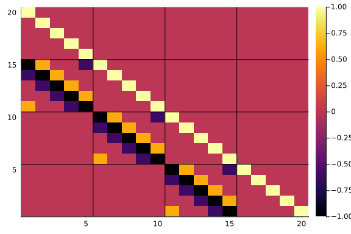
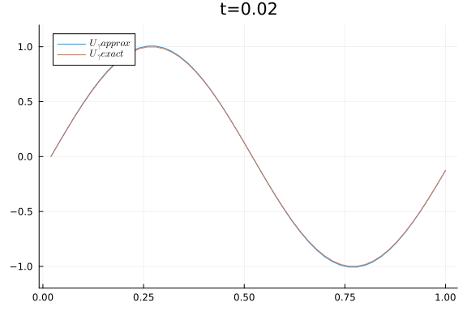
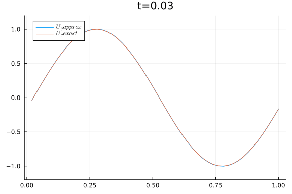
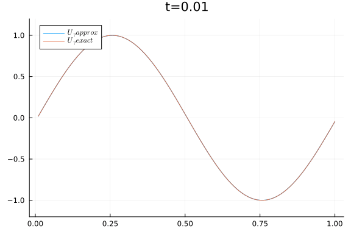
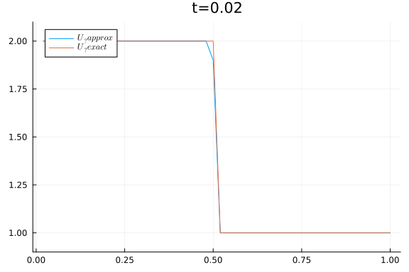

Linear transport equations
The simplest case of the one-dimensional version of the transport equation,
\[\begin{equation} U_t + a(x, t) U_x = 0 \quad \text{ in } \R \times \R_+, \label{eq:transport} \end{equation}\]
is when the velocity field $a$ is constant. The Cauchy problem is solved using the method of characteristics, where the solution is constant along the characteristic curves $x = x_0 + a t$. The solution is then
\[\begin{equation} U(x, t) = U_0(x - a t) \label{eq:transport_const} \end{equation}\]
for any $(x,t) \in \R \times \R_+$. We see that the initial data is transported with the velocity $a$. For more general cases, the characteristics may not be possible to solve explicitly. However, we can obtain some information of the sulutions with the following a priori energy estimate:
Assume $U$ is a smooth solution of the transport equation decaying to zero at infinity for all $t \in R_+$ and $a \in C^1(\R, \R_+)$. Then, $U$ satisfies the energy bound
\[ \int_{\R} U^2(x, t) \dd x \leq e^{\norm{a}_{C^1}t} \int_\R U_0^2(x) \dd x.\]
Follows by multiplying the transport equation by $U$ and integrating over space. Then, use that $U$ decays to zero at infinity and apply Grönwall's inequality.
The lemma shows that the energy is bounded. Using another functional, the assumptions on $U$ can be relaxed:
Assume $U$ is a smooth bounded solution of the transport equation. Then, we have
\[ \sup_{x \in \R} \abs{U(x, t)} \leq \norm{U_0}_{L^\infty(\R)}\]
for any $t > 0$.
For any $(x, t) \in \R \times \R_+$, there exists $\xi \in \R$ such that $U(x, t) = U_0(\xi)$
Finite difference schemes for the transport equation
For some velocity fields $a(x,t)$, it may not be possible to derive an explicit formula for the characteristic equation. We thus use numerical methods to approximate the solutions of the transport equation.
Discretization
For simplicity, assume that the velocity field is positive. AS $\R$ is unbounded, we truncate the domain into $\Omega = [x_L, X_R]$. Thus, we must impose boundary conditions, which will be discussed below. For simplicity, we use a uniform mesh of mesh size $\Delta x$ with $N+1$ points $x_j$:
\[ x_L = x_0 < x_1 < \cdots < x_N = x_R\]
We further choose some terminal time $T$ and divide into $M+1$ points $t^n = n \Delta t$. We set the initial approximaition $U_j^0 := U_0(x_j)$ and update the next approximation $U_j^{n+1}$ using a finite difference scheme.
Centered finite difference scheme
One such scheme is the forward difference in time and cetral difference in space approximating $(\ref{eq:transport_const})$:
\[ \frac{U_j^{n+1} - U_j^n}{\Delta t} + \frac{a(U_{j+1}^n - U_{j-1}^n)}{2 \Delta x} = 0, \quad 0 < j < N.\]
Example
We consider the domain $[0, 1]$ with initial data
\[ U_0(x) = \sin(2\pi x)\]
u0(x) = sin(2*pi*x)u0 (generic function with 1 method)and $a = 1$. Since the data is periodic, we impose periodic boundary conditions. Numerically, we implement this by setting
\[ U_{0}^n = U_N^n, \quad U_{N+1}^n = U_1^n\]
Thus, on the boundary, $j = 0, N$, we have
\[\begin{align*} \frac{U_1^{n+1} - U_1^n}{\Delta t} + \frac{a(U_2^n - U_N^n)}{2 \Delta x} = 0, \\ \frac{U_N^{n+1} - U_N^n}{\Delta t} + \frac{a(U_1^n - U_{N-1}^n)}{2 \Delta x} = 0. \end{align*}\]
For the first time step $n = 1$, we have
\[\begin{equation} U_j^1 = U_0(x_j) - \frac{\Delta t}{2 \Delta x} (U_0(x_{j+1}) - U_0(x_{j-1})) \label{eq:transport_first} \end{equation}\]
In addition, reshape $U_j^n$ into a column vector $U_j^n = U_{j+nN}$. Then, then above equations can be formulated as $A \bm U = \bm f$. Then the first $N$ entries of $\bm f$ are the right hand side of $(\ref{eq:transport_first})$ and the rest are zero. The matrix $A$ will then be a block tridiagonal looking like this:

Using a grid of $50$ mesh points, simulating to time $T = 3$, we get the following result:
x_L, x_R = 0, 1
T = 2
N = 50
dx = (x_R - x_L)/N
dt = 1 * dx
x = x_L+dx:dx:x_R
t = dt:dt:T
M = length(t)
A, f = central_difference.central_difference_scheme(N, M, dx, dt, u0)
U = A \ f
Viz.animate_solution(reshape(U, N, M),
(x, t) -> u0(x-t),
x, t)
Intuitively, the information should propagate from left to right. However, the scheme uses information from both sides. This can be explained rigorously using the the discrete energy
\[ E^n = \frac{1}{2} \Delta x \sum_j (U_j^n)^2.\]
We know that the exact solution have bounded energy. We say that a scheme is energy stable if $E^n \leq E^0$ for all $n$.
Let $U_j^n$ be the solutions computed with the central difference scheme. Then, we have the following dicsrete energy estimate:
\[ E^{n+1} = E^n + \frac{\Delta x}{2} \sum_j (U_j^{n+1} - U_j^n)^2\]
Thus, the energy grows at each time step for any choice of $\Delta x$ and $\Delta t$.
Similar to the proof of the continuous energy estimate and using the identity
\[ d_2(d_1 - d_2) = \frac{1}{2}\qty(d_1^2 - d_2^2)\]
Upwind scheme
To respect the flow of information, we can use forward and backward differences in space depending on the direction of propagation of information, i.e.
\[ \frac{U_j^{n+1} - U_j^n}{\Delta t} + \frac{a^+ (U_j^n - U_{j-1}^n)}{\Delta x} + \frac{a^- (U_{j+1}^n - U_j^n)}{\Delta x} = 0.\]
Information is "carried by the wind", hence the name upwind. The above equations can be written as
\[ \frac{U_j^{n+1} - U_j^n}{\Delta t} + \frac{a (U_{j+1}^n - U_{j-1}^n)}{2 \Delta x} = \frac{\abs{a}}{2\Delta x} (U_{j+1}^n - 2 U_j^n + U_{j-1}^n).\]
We see we have the central difference scheme with a diffusion term; the right hand side approximates $\frac{\Delta x \abs{a}}{2} U_xx$. Thus, it adds numerical viscosity to the unstable central difference scheme, which will play a crucial role later.
Now, we do the same numerical experiment as previously with $a = 1$:
using homemade_conslaws.upwind
x_L, x_R = 0, 1
T = 1
N = 50
dx = (x_R - x_L)/N
dt = 1.3 * dx
x = x_L + dx:dx:x_R
t = dt:dt:T
M = length(t)
A, f = upwind.upwind_scheme(N, M, dx, dt, u0)
U = A \ f
Viz.animate_solution(reshape(U, N, M),
(x, t) -> u0(x-t),
x, t)
x_L, x_R = 0, 1
T = 1
N = 100
dx = (x_R - x_L)/N
dt = 0.7 * dx
x = x_L+dx:dx:x_R
t = dt:dt:T
M = length(t)
A, f = upwind.upwind_scheme(N, M, dx, dt, u0)
U = A \ f
Viz.animate_solution(reshape(U, N, M),
(x, t) -> u0(x-t),
x, t)
We see that stability depends on the relation $\frac{\Delta t}{\Delta x}$.
If the mesh parameters satisfy the condition
\[ \frac{\abs{a} \Delta t}{\Delta x} \leq 1,\]
then the upwind solution satisfies the estimate
\[ E^{n+1} \leq E^n\]
so the scheme is conditionally stable.
Start similarly to the proof of the unconditional unstability of the central difference scheme and use the mentioned identity several times.
The above condition is called A CFL condition. We also have $L^1$ and $L^\infty$ stability:
Assume the above CFL condition holds. Then, the solutions of the upwind scheme satisfy
\[ \norm{U^{n+1}}_{L^1} \le \norm{U^n}_{L^1}, \quad \norm{U^{n+1}}_{L^\infty} \le \norm{U^n}_{L^\infty}.\]
The first inequality follows from $U_j^{n+1}$being a convex combination of $U_{j-1}^n$, $U_j^n$ and $U_{j+1}^n$.
Discontinuous initial data
We now consider the transport equation with $a = 1$ in the domain $[0, 1]$ with initial data
\[ U_0(x) = \begin{cases} 2, & x < 0.5, \\ 1, & x \geq 0.5. \end{cases}\]
This yields the discontinuous solution $U(x, t) = U_0(x - t)$. We use the upwind scheme with $N = 50$ and $N = 200$ mesh points.
x_L, x_R = 0, 1
T = 0.25
N = 50
dx = (x_R - x_L)/N
dt = 0.9 * dx
x = x_L+dx:dx:x_R
t = dt:dt:T
M = length(t)
u0(x) = x .< 0.5 ? 2 : 1
A, f = upwind.upwind_scheme(N, M, dx, dt, u0)
U = A \ f
Viz.animate_solution(reshape(U, N, M),
(x, t) -> u0(x-t),
x, t)
x_L, x_R = 0, 1
T = 0.25
N = 200
dx = (x_R - x_L)/N
dt = 0.9 * dx
x = x_L+dx:dx:x_R
t = dt:dt:T
M = length(t)
A, f = upwind.upwind_scheme(N, M, dx, dt, u0)
U = A \ f
Viz.animate_solution(reshape(U, N, M),
(x, t) -> u0(x-t),
x, t)